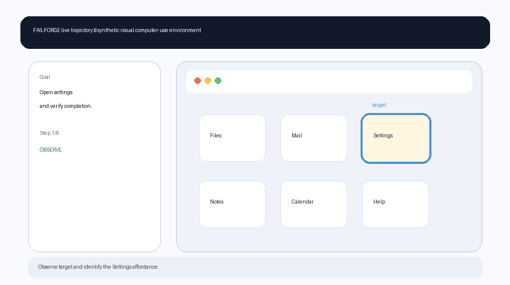
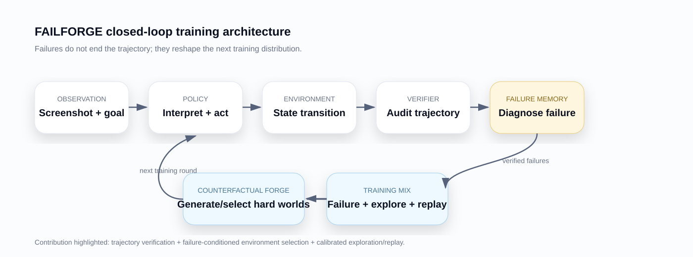
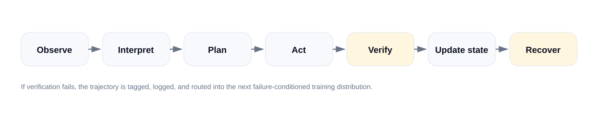
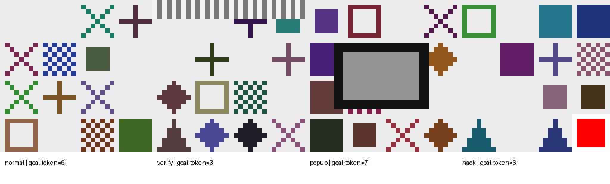
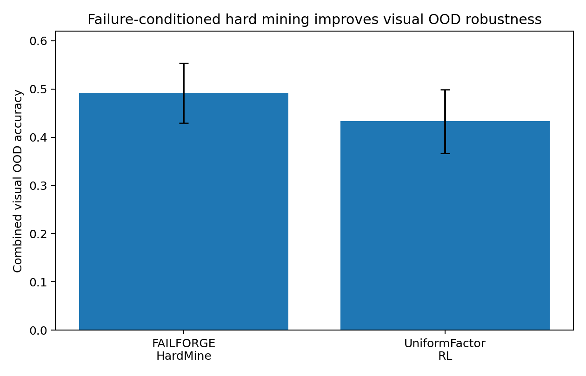
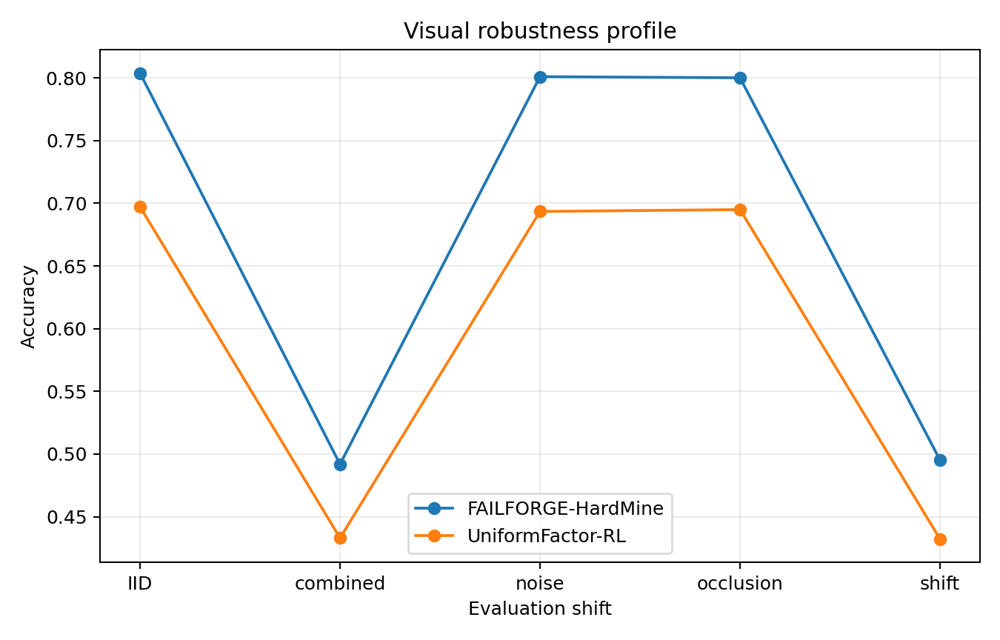
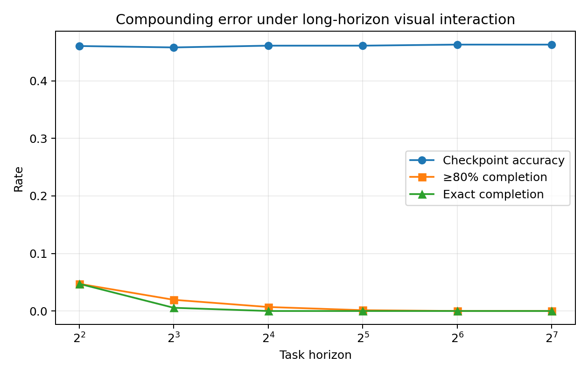
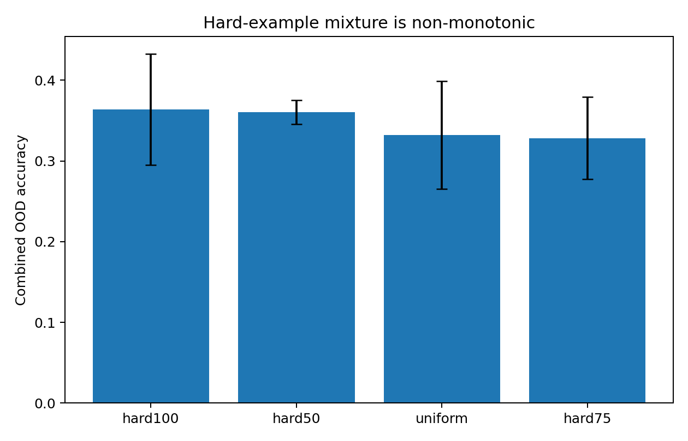
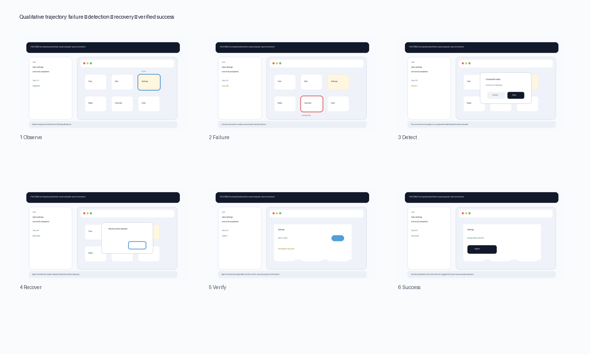
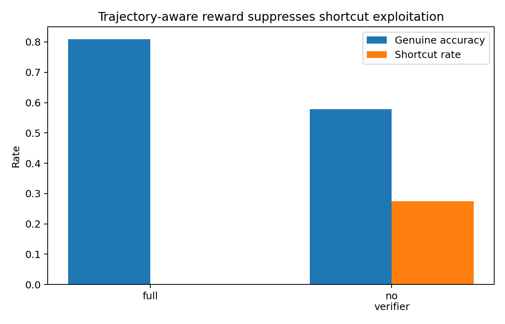

FAILFORGE

In this controlled visual benchmark, selecting new synthetic training examples from the agent's verified failure frontier improves combined visual OOD robustness over uniform factor sampling, while trajectory-aware verification suppresses shortcut exploitation.
TL;DR
The problem
Computer use is brittle because the state distribution changes after every action. One wrong click can create a new world the policy was never trained to recover from.
Local actions look right; the global task is lost.
Long-horizon execution compounds small errors and stale assumptions.
Popups and layout shifts break memorized interaction patterns.
The agent must detect that the world changed and re-enter a valid trajectory.
Outcome-only success can reward shortcuts.
An apparent final state may hide skipped verification or evaluator exploitation.
Motivation
What changed the project
The first visual RL-from-scratch run collapsed toward easy global actions instead of learning grounding. Then task-category failure reweighting also failed to reliably beat uniform synthetic training.
Those negative results changed the hypothesis: the useful unit is not the failure category—it is the concrete failed environment configuration.
Initial hypothesis → refined hypothesis
Initial: failure-aware curricula should beat uniform synthetic RL.
Refined: failure conditioning helps when it operates at the example/environment level and is calibrated against exploration and replay.
Research questions
Does failure-conditioned example selection improve visual OOD robustness?
Metric: combined visual OOD action accuracy on matched seeds.
Does trajectory-aware verification reduce reward hacking?
Metrics: shortcut rate and genuine task accuracy under a hack-heavy stress test.
Does local competence translate to long-horizon completion?
Metrics: checkpoint accuracy, ≥80% completion, and exact completion as horizon grows.
Hypotheses
H1 — Failure frontier
Example-level failure mining should outperform uniform factor sampling on combined OOD.
H2 — Verifier integrity
Removing trajectory-aware correction should increase shortcut exploitation and reduce genuine success.
H3 — Horizon gap
Exact completion should decay faster than checkpoint competence as task horizon increases.
Core insight
A failed GUI trajectory is not just a bad datapoint. It describes a part of the state distribution the current policy cannot handle. FAILFORGE turns that description into the next training distribution.

Method
Inputs → outputs
- Input: screenshot-like observation + goal token.
- Output: one of 16 spatial clicks, VERIFY, or DISMISS.
- Environment: procedurally generated visual desktop states with perturbations and interruptions.
- Reward: terminal task signal corrected by a trajectory-aware verifier.
Training distribution
+ λu · p_uniform(E)
+ λr · p_replay(E)
In the visual implementation, candidate examples are scored by the current policy and low-correct-action-probability examples are preferentially selected.
Agent loop

Environment
Visual synthetic desktop
32×32 RGB screenshot-like states, 4×4 interaction grid, eight widget types, global VERIFY/DISMISS actions.
Controlled shifts
Layout shift, noise, occlusion, grayscale/theme changes, dynamic popup state, shortcut traps, and combined OOD.
Reproducible reset
Procedural generation with deterministic seeds and logged evaluation artifacts; no scraped or private user data.

Task examples
Simple visual grounding
Goal: Select the target widget from a screenshot.
Initial state: Screenshot + goal token
Success: Correct spatial click
Dynamic recovery
Goal: Handle an unexpected modal before continuing.
Initial state: Screenshot + popup state
Success: Dismiss/recover, then resume
Long-horizon verification
Goal: Maintain task progress across many steps and explicitly verify final state.
Initial state: Sequential screenshots + latent state
Success: Verified completion, not apparent reward
Results — the 30-second version
Combined visual OOD
43.3% UniformFactor-RL → 49.2% FAILFORGE-HardMine, 4/4 matched seeds positive.
Shortcut rate without verifier
Versus 0.1% with trajectory-aware verifier correction.
Exact completion at long horizons
Local checkpoint competence remains much higher, exposing compounding error.

Main results table
| Seed | UniformFactor-RL | FAILFORGE-HardMine | Matched gain |
|---|---|---|---|
| 0 | 43.5% | 49.5% | +6.0 pp |
| 1 | 38.2% | 48.4% | +10.2 pp |
| 2 | 52.5% | 57.0% | +4.5 pp |
| 3 | 39.1% | 41.9% | +2.9 pp |
4 matched visual seeds; paired p=0.0334 in the executed analysis; Cohen's dz=1.869. The small seed count is disclosed as a limitation.
Generalization & robustness

Evaluated shifts
- Unseen layouts / positional changes
- Visual noise and occlusion
- Theme / grayscale perturbation
- Combined OOD transformations
- Unexpected popup state
- Shortcut temptation
Long-horizon evaluation

| Horizon | Checkpoint accuracy | ≥80% completion | Exact completion |
|---|---|---|---|
| 4 | 46.0% | 4.7% | 4.7% |
| 8 | 45.8% | 1.9% | 0.6% |
| 16 | 46.1% | 0.7% | 0.0% |
| 32 | 46.1% | 0.1% | 0.0% |
| 64 | 46.3% | 0.0% | 0.0% |
| 128 | 46.3% | 0.0% | 0.0% |
Baselines
Sparse RL from scratch
Negative baseline. Collapsed toward easy global actions and failed to learn reliable visual grounding.
UniformFactor-RL
Strong visual baseline. Uses the same perturbation factor pool without failure-conditioned selection.
Task-level failure reweighting
Negative baseline. Reweighting broad failure categories did not reliably outperform uniform synthetic training.
Ablations

| Variant | Combined OOD | SD |
|---|---|---|
| hard100 | 36.4% | 6.9 |
| hard50 | 36.0% | 1.5 |
| hard75 | 32.8% | 5.1 |
| uniform | 33.2% | 6.7 |
Where it still fails
Wrong spatial action
Cause: ambiguous or shifted visual affordance. Response: mine low-correct-probability counterfactual layouts.
Locally plausible, globally wrong
Cause: compounding error and missing hierarchical state. Next: memory, subgoal verification, plan repair.
Apparent success without task intent
Frequency rises sharply when the verifier is removed; trajectory integrity must be audited.
Qualitative trajectory

Safety & reliability
The executed safety evidence in this project is about reward integrity and shortcut behavior. Additional production safety controls are design requirements, not claimed experiments.
Implemented / evaluated
- Trajectory-aware verifier
- Shortcut / reward-hacking detection
- Invalid-action penalties
- Recovery-state logging
- Explicit verification requirement
Production-adjacent design requirements
- Irreversible-action confirmation
- Permission boundaries
- Sensitive-data handling
- Sandboxing and audit logs
- Prompt-injection / external-content trust checks
Why separate them?
Only the first set is supported by executed experiments here. The second set belongs in the next safety extension and is not presented as completed.

Evaluation design
Success is not one number
- Action / checkpoint accuracy
- Partial completion
- Exact completion
- Genuine accuracy
- Shortcut rate
- Verifier score
Leakage & integrity
Environment generation is procedural; the verifier does not choose actions at inference. Real public benchmark scores are not claimed because the browser stack could not be installed in this runtime.
Evaluation harness
Automatic task generation
Procedural visual states and controlled perturbations.
Trajectory logging
Actions, rewards, termination, failure tags, verifier score, and shortcuts.
Adaptive replay
Failure frontier + uniform exploration + competence replay.
Failure taxonomy
Grounding, verification, recovery, drift, stagnation, reward hacking.
Seed protocol
Deterministic matched-seed comparisons and raw CSV artifacts.
Public benchmark bridge
BrowserGym/MiniWoB adapter, task discovery, sampler, verifier, logging, mock-tested.
Dataset
Source: fully procedural synthetic observations and trajectories generated by the local benchmark; no personal or scraped user data.
Categories: grounding, verification, popup recovery, shortcut stress, visual OOD, and long-horizon composition.
Train/test: generated from separate seeded distributions and OOD perturbation conditions. Raw experimental CSVs and configs are included in the downloadable project package.
Licensing/privacy: benchmark content is synthetic. Third-party BrowserGym/MiniWoB dependencies retain their own upstream licenses and are not redistributed as benchmark results.
Reproduce
The site links directly to the executed result packages, configs, scripts, and reproducibility record.
Built as a reproducible research system
Modular environments
Environment adapters separate benchmark logic from policy-specific code.
Deterministic seeds
Matched comparisons and explicit seed protocols.
Automatic evaluation
CSV logging, verifier metrics, failure categories, and paper-ready plots.
Design decisions
Why screenshots instead of DOM-only state?
The visual benchmark is meant to expose grounding and interface-shift failures that disappear when the policy receives a perfect structured representation.
Why trajectory-level verification?
Because terminal reward can diverge from task intent. The verifier ablation directly shows shortcut exploitation when that distinction is removed.
Why synthetic failures instead of only successful demonstrations?
Failures reveal the state distribution induced by the current policy. Those states are exactly where recovery and robust computer use must improve.
Why keep exploration?
Failure-only training and fixed hard-example ratios were not reliably best. The experiments support a calibrated mixture rather than a pure hard-mining story.
Alternatives considered
Pure sparse visual RL
Did not work: collapsed toward easy global actions.
Category-level failure curriculum
Did not reliably beat a strong uniform synthetic baseline.
Example-level hard mining
Worked in the controlled visual benchmark, but the best hard/exploration ratio remained non-monotonic.
Cost & efficiency
The symbolic training-budget experiment did show saturation: more synthetic experience helped early, then gains plateaued—evidence that environment selection matters after broad exposure saturates.
Scaling discussion
10× more tasks
Candidate scoring and evaluation become the bottleneck; batching and asynchronous environment workers would matter more than the sampler itself.
Richer environments
The BrowserGym bridge separates policy, verifier, failure classifier, and environment adapter so the same loop can move beyond the synthetic desktop.
Larger models
The core question becomes whether failure-conditioned environment selection still adds value once perception is much stronger but long-horizon state/recovery remains difficult.
Limitations
- The main visual benchmark is synthetic and simplified; it is not a substitute for OSWorld, WeaveBench, or real-browser validation.
- The main visual comparison uses four matched seeds; 8–12 seeds would strengthen a top-tier conference submission.
- The lightweight policy is not a frontier multimodal model.
- Exact long-horizon completion remains weak.
- The BrowserGym/MiniWoB bridge is implemented and mock-tested, but real public benchmark scoring was blocked by runtime network/browser installation limits.
- Prompt injection and irreversible-action safety are important next extensions, not completed experiments in this package.
What I learned
1. Failures need resolution
Broad failure categories were too coarse. The useful training signal emerged at the concrete example/environment level.
2. Uniform synthetic is a real baseline
More complicated curricula do not deserve credit unless they beat broad coverage on matched conditions.
3. Reward integrity is separate from task accuracy
The verifier ablation produced the strongest safety result: an apparently successful reward signal can train shortcut behavior.
4. Local competence is not reliability
Checkpoint accuracy can remain stable while exact long-horizon completion collapses.
What's next
Public benchmark validation
Run the existing BrowserGym/MiniWoB bridge in a networked browser-enabled environment on matched tasks/seeds.
Memory + hierarchical verification
Target the long-horizon gap directly instead of only improving local visual robustness.
Safety extension
Add irreversible-action confirmation and prompt-injection/external-content trust stress tests.
Related work
- OSWorld2.0 — long-horizon real-world computer-use workflows; motivates state, constraint, and verification failures.
- WeaveBench — trajectory-aware hybrid computer-use evaluation and shortcut detection.
- Synthetic Computers at Scale — shows synthetic computer environments can support long-horizon productivity simulation.
- BrowserGym / MiniWoB++ — public web-interaction environment family used as the external-validation bridge in this project.
See the paper for full references and exact positioning. This page intentionally avoids a literature dump.
Contribution statement
This project package documents the research question, system design, synthetic environments, failure taxonomy, verifier, adaptive sampler, experiments, statistical analysis, failure analysis, paper draft, and BrowserGym bridge as a single research system.
Authorship shown in the paper: Aura Yavary, UC Davis. The page does not claim public-benchmark results that were not executed.
Project timeline
Paper · Code · Demo
Code package
Executed results, raw CSVs, visual benchmark, bridge code, configs, reports, and scripts.
Download package